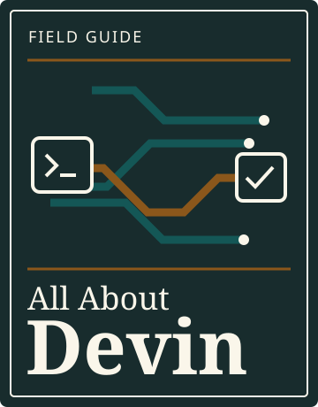

Engineering & operations
All About Devin
Give Devin a small job, check its work, and decide when your team is ready to use it on a larger project.
Download the complete book (.zip)Team Rollout & Quick-Start Map
- First Steps & Quickstarts
Start with the offline practice desk. Then open Devin and try a question about a practice repo.
- Make Devin Fast
Use Ask or DeepWiki to read code, the CLI for a local edit, or an Agent session on a saved snapshot to run tests in the cloud.
- Devin: Full Potential
Explore the 12 surface guides. Check what each tool can do and which permissions your team needs.
- 30 Hands-On Labs & PowerShell Exchange Kit
Start with the read-only mailbox report. Have a teammate reproduce the sample result before trying the workflow on work data.
Hands-on labs
Picture index
Choose a picture to open its lesson. Inside the lesson, tap the picture to enlarge it.
Contents
Begin with your first practice project, or choose a walkthrough from the list. Each lesson tells you what to do, what you should see and how to get unstuck.
Read the guides and open the practice kit offline. To work in Devin Cloud, connect to the internet and use an account with access.